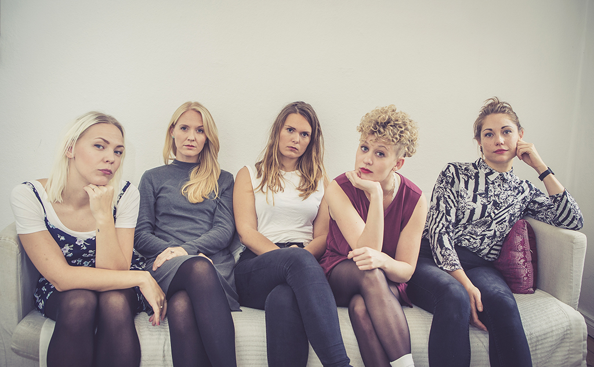

Sarah Thordsen
Sangskriveren, skuespilleren,
sangerinden og underviseren
Sarah Thordsen er en meget alsidig kvinde og bevæger sig rundt på mange forskellige grene. Hendes drivkraft er musikken og hun har altid haft det tæt på sig, da hun er vokset op med musikalske forældre. Sarah er aktiv med hendes egne sange i Sarah Thordsen Band, samt vokal-kooperativet Echoes in Veil. Hun er uddannet bachelor i sang og korledelse fra Det Jyske Musikkonservatorium. Underviser i sang og kor, samt har medvirket i en lang række teaterforestillinger.
MUSIK
